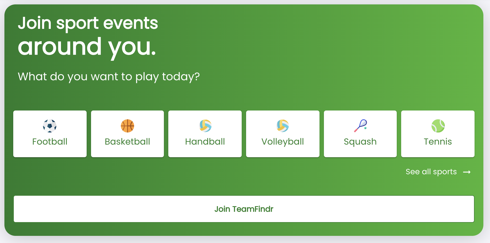

Migrating Teamfindr from CRA+Express+AWS to Next.js+Vercel
Aug 16, 2022 · 4 minute read · CommentsDevelopment
 TeamFindr is a mobile-first web application that helps you find nearby pick-up games, organise games with your friends and find extra players. My friend Cristi and I built it during the pandemic. Back then, I used CRA for the client and Express for the REST API. The client was deployed to Github pages and the server to an EC2 machine on AWS via Docker. The whole thing is open source.
Recently, I migrated TeamFindr to Next.js and deployed it to Vercel. In this article, I go over the reasons for the change, the actual migration process and some comparative metrics.
🤔 Reasons to migrate
What prompted me to migrate was that the EC2 free tier in my AWS account expired. My t2.micro instance was ~$10/month, and Vercel’s free tier limits are more than enough to keep TeamFindr online. My rule is that side projects must remain free to run 😅.
There were other reasons as well.
- ⛰️ Next.js and Vercel support API routes, which allows me to keep both client and API in the same deployment unit.
- 🎉 A single codebase means sharing typescript types between client and API is more manageable without the need for complex monorepo setups like yarn workspaces.
- 🔥 Vercel offers zero-config deployments and eliminates a bunch of technologies from my project. Just Vercel now replaces Docker, ECR, Nginx and EC2. Fewer tools and less config mean easier reproducibility.
- 🔒 There is no vendor lock-in because one can quickly deploy Next.js apps elsewhere.
- 🏎️ Next.js developer experience is better, and you get other niceties like automatic code splitting and optimised images.
🦜 The migration process
Overall, it was a smooth ride that only took a couple of days from start to shipping.
The first step was to port the client from CRA to Next.js. The original application was a client-rendered SPA, and I kept it that way for several reasons.
- The entire package assumed it runs on the client. The app uses
windowand other browser APIs such asnavigator.geolocation. - I didn’t have to bother migrating away from
react-routerto Next.js’s router. - The old app used
HashRouter. Switching to regular routing would mean breaking links such ashttps://teamfindr.saltares.com/#/venues/8d37b22c-6563-4723-a97c-a5fcc0747695.
I followed the Next.js docs to migrate from a CRA, particularly the SPA section. At that point, I had a Next.js-powered frontend that talked to my old Express API. To test components in isolation, I used Storybook, so I followed their official guide to set it up in Next.js, and all my old stories worked perfectly.
Migrating the API was slightly trickier, especially getting passport authentication to work. My Express server relied on a bunch of middleware: passport, cookie-session, cookie-parser, logging, protected routes, etc.
Fortunately, I discovered next-connect, which you can plug into your Next.js API routes and inject all your middleware. That made it super easy to keep middleware and endpoint handlers mostly as-is.
This is what my API routes look like.
const getEvents: Handler = async ({ query, user }) => {
const events = await searchEvents({
query: parseSearchEventsQuery(query),
userId: user?.id as string,
});
return {
status: 200,
body: { events },
};
};
export default createRoute([
{
method: 'get',
handler: getEvents,
requiresAuth: false,
}
]);
And here’s part of my createRoute function.
const createRoute = (endpoints: EndpointDefinition[]) => {
...
const router = connect()
.use(cors({
origin: Config.hostUrl,
methods: 'GET,HEAD,PUT,PATCH,POST,DELETE',
credentials: true,
}))
.use(cookieSession({
name: 'session',
keys: [Config.authentication.cookieKey],
maxAge: 365 * 24 * 60 * 60 * 1000, // 1 year
overwrite: true,
}))
.use(cookieParser())
.use(passport.initialize())
.use(passport.session())
.use(withRenewSession)
.use(withRequestLogger)
.use(withAuthenticatedUser);
endpoints.forEach((endpoint) => {
router[endpoint.method](createRawHandler(endpoint.handler));
});
return router;
};
As an aside, NextAuth makes it far easier to get authentication in a Next.js app. I would totally use it if I were to build the app from scratch.
At last, I could point the client to talk to the new Next.js API routes.
Shipping was the easiest part.
- Merge to the
mainbranch. - Configure a new app in Vercel and get it deployed.
- Make the
teamfindr.saltares.comdomain point at Vercel. - Delete the EC2 instance in AWS.
- Save $10/month 🤑😅.
📈 Before and after
TeamFindr has 18% less code and deploys 54% faster as a Next.js app running on Vercel than a CRA+Express app on EC2. The REST API response times are mostly unchanged except for cold starts. When you hit a cold route, response times may increase by between 100 and 1000ms. Given the performance requirements of TeamFindr, I would say this is a fair tradeoff, and the benefits far outweigh the compromises.
| Metric | Before | After | Change |
|---|---|---|---|
| Lines of code | 12663 | 10414 | -18% |
| Deployment times | ~5m30s | ~2m30s | -54% |
| API response times (average) | ~80-200ms | ~80-300ms | Negligible |
🙌 Thanks for reading. I hope you find my experience migrating a CRA app to Next.js helpful.